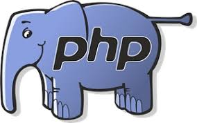

YC# is most popular among bigger established businesses, often for building internal software. Because it's been around for a long time and has the backing of Microsoft, it is one of the most in-demand languages in the job market. C# has also been going through a bit of a rebirth lately, with Microsoft open sourcing the language and surrounding platform, porting it to run on Mac and Linux, and incorporating many of the best features of other languages. If you like the idea of working for a larger company on business software, C# is a great choice.

PHP is by far the most popular backend language today, with 80 percent of websites utilizing it 'server-side'. It is perhaps best known for it's use in content management systems like Wordpress, Drupal, and Joomla. But the versatility of the language and the frameworks it powers make employment options numerous and diverse. If you're keen to work for a fast paced agency that builds websites for lots of clients, or maintain the security and stability of a huge complex of government websites, or if you like the idea of building out small sites for brands, businesses, and organizations - In any of these cases, PHP would be a great way to go.

Ruby is a favorite language of developers building interactive web applications. If an app involves users creating accounts, entering information, and interacting with dynamic content, there's a good chance it is built with Ruby. Ruby became popular because the Rails framework, which is written with Ruby, simplified many of the common tasks associated with building web applications. It's most popular with startups and smaller companies who are looking to build their product quickly.
Though each language has its niche, there is plenty of crossover. For example, Rails' popularity inspired copycats in just about every language, and so you'll see interactive web applications written in C#, Java, and PHP, with Rails-like frameworks including .NET MVC, Spring, and Laravel. Even at one company, you might find them using PHP for their marketing site, Ruby for their web application, and Java for their back-end processing.